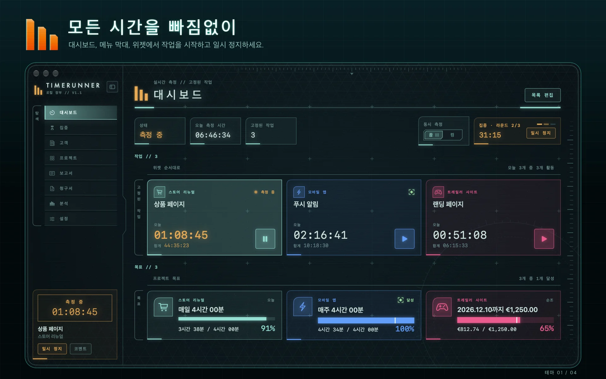
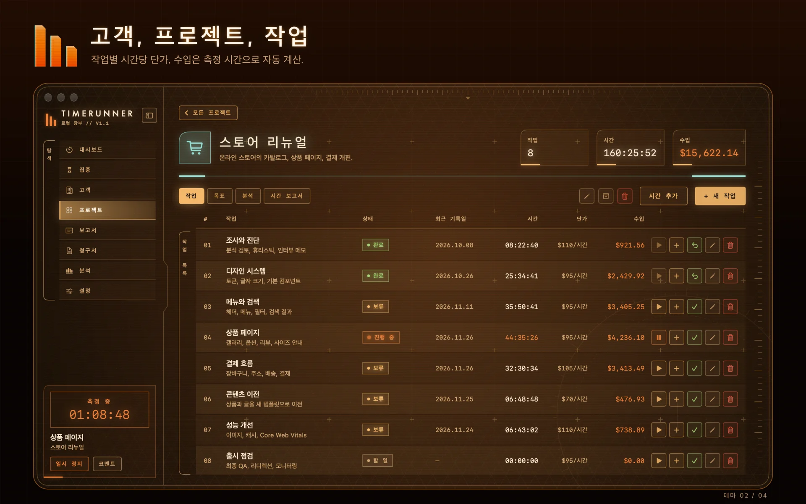
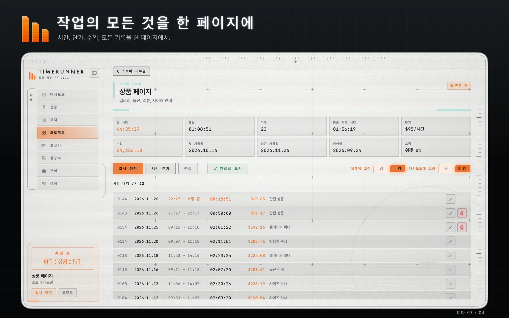
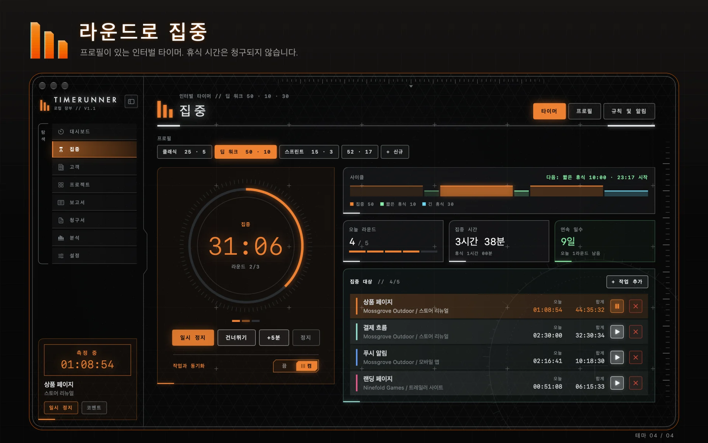
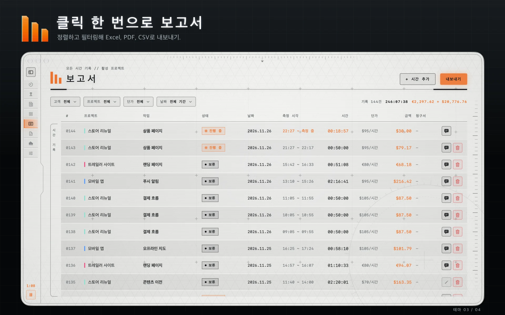
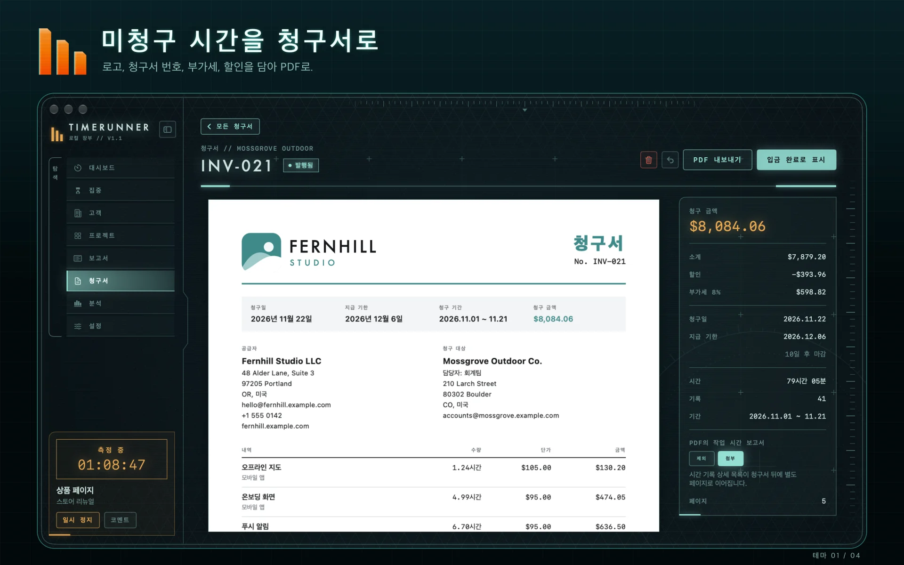
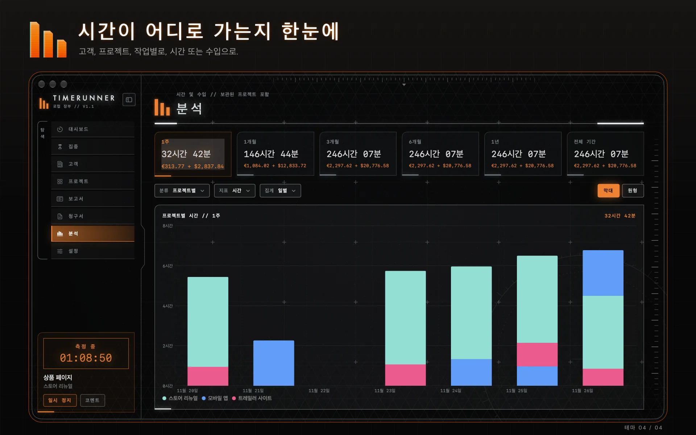
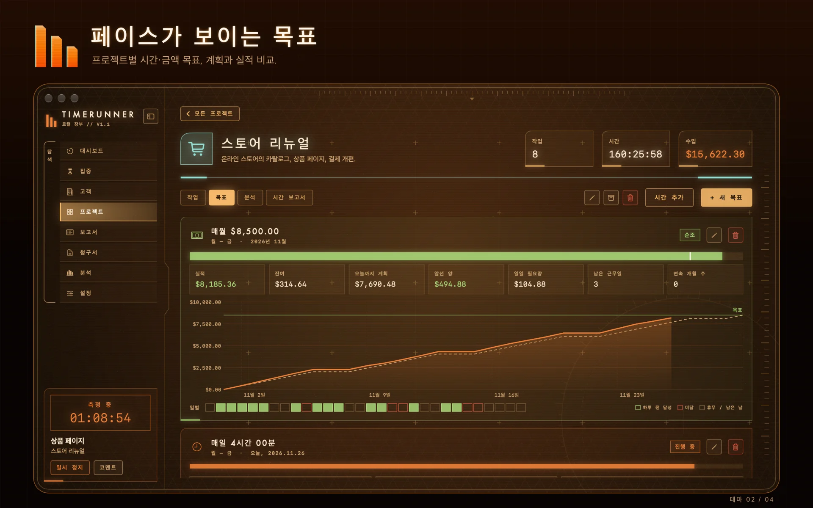
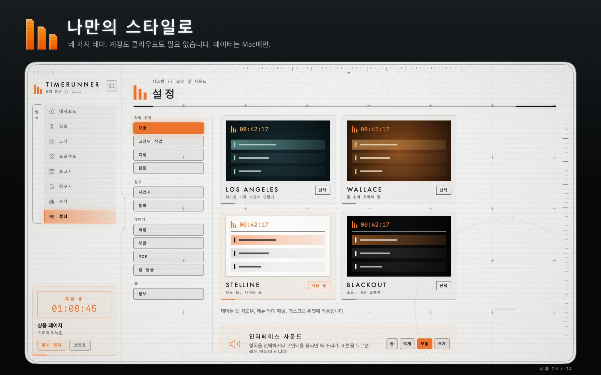
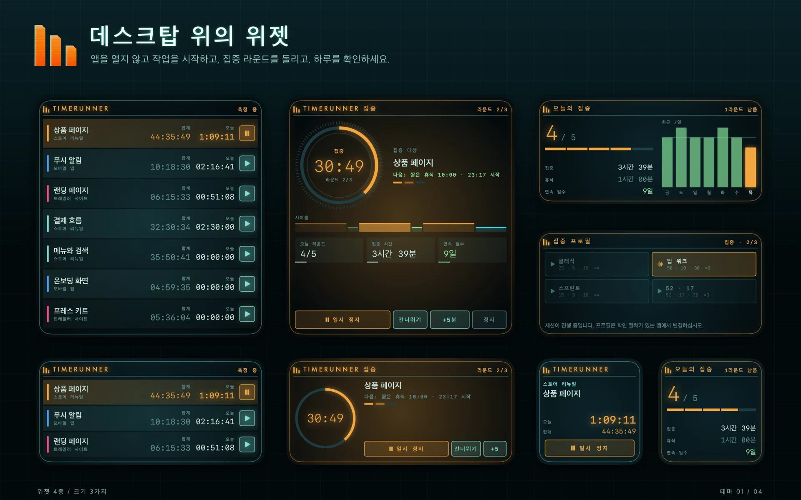

청구하는 방식 그대로,
시간을 측정
메뉴 막대, 위젯, 앱에서 청구할 시간을 측정하세요. 라운드로 집중하고, 목표를 달성하고, PDF 청구서를 보내세요. 첫 달은 무료. 모든 데이터는 Mac에만 남습니다.


02 / 10
- 고객 → 프로젝트 → 작업 → 시간 기록, 작업마다 단가와 통화 설정
- 타이머는 한 번에 하나, 또는 여러 개를 동시에

03 / 10
- 측정하지 못한 시간을 날짜, 길이, 코멘트와 함께 추가
- 상태: 할 일, 진행 중, 보류, 완료

04 / 10
- 뽀모도로 방식의 인터벌 타이머: 집중 라운드, 짧은 휴식, 마지막 라운드 뒤의 긴 휴식
- 프로필: 25·5, 50·10, 15·3, 52·17, 그리고 직접 만든 프로필
- 작업의 타이머를 실행하고 휴식 중에는 멈출 수 있어, 휴식 시간은 청구되지 않습니다
- 사운드, 알림, 종료 전 예고, 휴식 화면
- 집중을 위한 작업 목록: 세션은 목록에 넣은 작업에만 연동됩니다

05 / 10
- 모든 기록을 정렬할 수 있는 표, 고객·프로젝트·단가·날짜 필터
- Excel 통합 문서(.xlsx), PDF, CSV로 내보내기

06 / 10
- 고객의 미청구 시간으로 PDF 청구서 작성: 전체 또는 기간 지정, 작업·프로젝트·기록별 항목
- 로고, 색상, 결제 정보, 번호 매기기, 세금과 할인
- 초안 → 발행됨 → 결제됨, 연체는 지급 기한으로 자동 계산
- 발행된 청구서의 시간은 두 번 청구되지 않습니다

07 / 10
- 주, 월, 분기, 연도 또는 전체 기간의 합계를 고객, 프로젝트, 작업별로, 시간 또는 수입으로

08 / 10
- 프로젝트별 시간 또는 금액 목표: 하루, 한 주, 한 달 단위 또는 특정 날짜까지
- 진행률, 페이스, 계획 대비 실적 차트, 날마다의 표시

09 / 10
- 청록 네온부터 차분한 검정까지 네 가지 테마
- 쓰지 않는 섹션은 숨길 수 있습니다
- 윈도우를 화면 구석으로 줄여도 그대로 쓸 수 있습니다
- 9개 언어 지원: 영어, 스페인어, 프랑스어, 독일어, 이탈리아어, 폴란드어, 벨라루스어, 일본어, 한국어

10 / 10
- 클릭 한 번으로 시작하거나 일시 정지: 앱, 메뉴 막대, 데스크탑 어디서나
- 위젯 세 가지: 타이머, 오늘의 집중, 프로필
- 작업을 대시보드와 데스크탑 위젯에 따로 고정
처음부터 비공개로 설계
- 계정 없음, 분석 없음, 광고 없음. 입력한 내용은 Mac 밖으로 나가지 않습니다
- Mac과 직접 고른 폴더에 매일 자동 백업
- Touch ID 잠금(선택 사항)
- 모든 국가 통화와 상위 10개 암호화폐
AI 준비 완료
- 내장 MCP 커넥터로 Mac의 AI 도우미가 프로젝트와 시간을 읽고 새 기록을 추가할 수 있습니다. 직접 켠 경우에만 가능하며, 편집하거나 삭제할 수는 없습니다
첫 달은 무료, 그다음은 선택
TimeRunner는 무료로 다운로드할 수 있고, 첫 달은 모든 기능이 무료입니다. 그 후에는 다음 중에서 고르세요.
월간
$2.99
매달 결제
연간
$19.9912 × $1.99
해마다 결제, App Store가 제공하는 지역에서는 12회 월 납부도 가능
평생 이용권
$39.99
한 번만 결제, 갱신 없음
플랜이 없으면 TimeRunner는 읽기 전용이 됩니다. 기록은 Mac에 그대로 남고, 계속 열고 내보내고 백업할 수 있습니다.
구독 요금은 Apple 계정으로 청구되며, 기간이 끝나기 최소 24시간 전에 취소하지 않으면 같은 기간과 같은 가격으로 자동 갱신됩니다. App Store 계정 설정에서 관리하거나 취소할 수 있습니다.
미국 기준 가격입니다. 다른 국가에서는 App Store에 해당 국가의 가격이 표시됩니다.